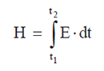
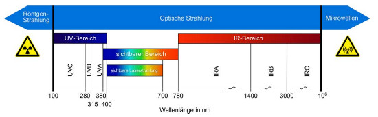
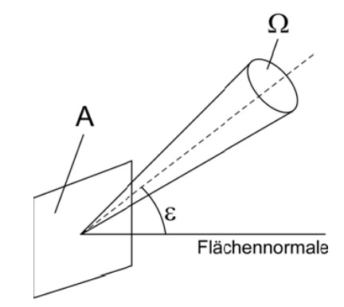
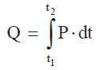

Es gelten die in § 2 OStrV festgelegten Begriffe. Im Folgenden werden zu wichtigen Begriffen nähere Erläuterungen gegeben (alphabetische Aufzählung).
(1) Unter dem Augensicherheitsabstand versteht man die Entfernung, bei der die Bestrahlungsstärke oder die Bestrahlung gleich dem entsprechenden Expositionsgrenzwert der Hornhaut des Auges ist. Schließt man beim Augensicherheitsabstand auch die Möglichkeit der Betrachtung mit optischen Hilfsmitteln ein, so wird vom erweiterten Augensicherheitsabstand (ENOHD) gesprochen.
(2) Zur Angabe des Abstandes gehört immer auch die Angabe der Expositionsdauer, die bei der Ermittlung angesetzt wurde.
(1) Unter dem Ausmaß ist nach § 2 Absatz 9 OStrV die Höhe der Exposition durch Laserstrahlung zu verstehen.
(2) Je nach Wellenlängenbereich und zu vermeidender Wirkung (Schutzziel) wird das Ausmaß durch die Strahlungsgrößen Bestrahlungsstärke, Bestrahlung oder Strahldichte ausgedrückt.
(1) Die Bestrahlung H (oder Energiedichte) ist das Integral der Bestrahlungsstärke E über die Zeit t. Sie ist gegeben durch den Zusammenhang:

(2) Bei Expositionen an Arbeitsplätzen ist über die Expositionsdauer Δt = t2 – t1 zu integrieren.
(1) Die Bestrahlungsstärke E (oder Leistungsdichte) ist die auf eine Fläche fallende Strahlungsleistung dP je Flächeneinheit dA. Sie ist gegeben durch den Zusammenhang:
| E = | dP |
| dA |
(2) Bei homogener Verteilung der Strahlungsleistung gilt:
| E = | P |
| A |
Einheit: W • m-2 (Watt pro Quadratmeter)
(3) In der Fachliteratur wird die Strahlungsleistung auch mit dem Formelzeichen Φ, φ bzw. Φe, φe bezeichnet.
In dieser TROS wird zwischen den Betriebszuständen Normalbetrieb (bestimmungsgemäßer Betrieb, bestimmungsgemäße Verwendung) und vom Normalbetrieb abweichenden Betriebszuständen, die in der Regel mit einer erhöhten Gefährdung verbunden sind, wie z. B. Wartung, Service, Einrichtvorgang, Prüfung, Errichtung und Außerbetriebnahme, unterschieden.
Betrieb einer Laser-Einrichtung im gesamten Funktionsbereich, ohne z. B. Wartung und Service.
Durchführung der Justierungen oder Vorgänge, die in den vom Hersteller mit der Laser-Einrichtung gelieferten Informationen für den Benutzer beschrieben sind und vom Benutzer ausgeführt werden, um die vorgesehene Funktion der Laser-Einrichtung sicherzustellen. Normalbetrieb und Service sind hierbei nicht enthalten. Nach den Herstellervorgaben darf bei der Wartung von Laser-Einrichtungen der Klassen 1, 1M, 2, 2M und 3R Strahlung der Klasse 3B und 4 nicht zugänglich werden. Bei der Wartung von Laser-Einrichtungen der Klasse 3B darf Strahlung der Klasse 4 nicht zugänglich werden.
Hinweis:
In der Literatur wird für die Wartung von Laserbearbeitungsmaschinen auch der Begriff "(vorbeugende) Instandhaltung" benutzt (siehe z. B. DIN EN ISO 11553-1 [4]).
Durchführung von Einrichtungs- oder Justierarbeiten, die in den Service-Unterlagen des Herstellers beschrieben sind und die in irgendeiner Art die Leistungsfähigkeit der Laser-Einrichtung beeinflussen können.
Hinweis:
In der Literatur wird für Service von Laserbearbeitungsmaschinen auch der Begriff "korrigierende Instandhaltung" benutzt (siehe z. B. DIN EN ISO 11553-1 [4]).
Der Blick in eine ausgedehnte Quelle ist die Sehbedingung, bei der das Auge die scheinbare Quelle im Expositionsabstand (nicht kleiner als 100 mm) unter einem Winkel sieht, der größer als die kleinste Winkelausdehnung (Grenzwinkel) αmin ist. Beispiele sind der Blick auf diffuse Reflexionen und auf bestimmte Anordnungen von Laserdioden.
Ein Dauerstrichlaser ist ein Laser mit kontinuierlicher Ausgangsleistung, der über einen Zeitraum von mindestens 0,25 s strahlt.
Unter diffuser Reflexion versteht man die Veränderung der räumlichen Verteilung eines Strahlungsbündels nach der Streuung durch eine Oberfläche oder eine Substanz in viele Richtungen. Ein vollkommen diffus streuendes Material zerstört jede Korrelation zwischen den Richtungen der einfallenden und der reflektierten Strahlung.
Hinweis:
In der Regel tritt diffus und gerichtet reflektierte Strahlung zusammen auf. Je geringer die Oberflächenrauigkeit und je größer der Einfallswinkel, desto höher ist der Anteil gerichteter reflektierter Strahlung (abhängig von der Wellenlänge).
Der direkte Blick in den Strahl umfasst alle Sehbedingungen, bei denen das Auge einem direkten oder einem spiegelnd reflektierten Laserstrahl ausgesetzt ist, im Gegensatz zur Betrachtung von z. B. diffusen Reflexionen.
Der Empfangswinkel γ ist der ebene Winkel, innerhalb dessen ein Empfänger (optisches Messgerät) auf optische Strahlung anspricht, manchmal auch Messgesichtsfeld oder FOV (field of view) genannt. Der Empfangswinkel γ kann durch Blenden oder optische Elemente eingestellt werden. Die im Teil 2 der TROS Laserstrahlung verwendete Einheit für γ ist Milliradiant (mrad).
Exposition im Sinne dieser TROS Laserstrahlung ist die Einwirkung von Laserstrahlung auf die Augen oder die Haut.
Die Expositionsdauer Δt ist – im Unterschied zur täglichen Arbeitszeit – die tatsächliche Dauer der Einwirkung von Laserstrahlung auf die Augen oder die Haut während der Arbeitszeit. Sie ist Grundlage für die Ermittlung der Expositionsgrenzwerte.
Die Expositionsgrenzwerte nach § 2 Absatz 5 OStrV sind maximal zulässige Werte bei Exposition der Augen oder der Haut gegenüber Laserstrahlung. Diese sind im Anhang 4 Abschnitt A4.1 des Teils 2 "Messungen und Berechnungen von Expositionen gegenüber Laserstrahlung" aufgeführt.
Hinweis 1:
Der EGW ist das maximale Ausmaß der Laserstrahlung, dem das Auge oder die Haut ausgesetzt werden kann, ohne dass damit akute Gesundheitsschädigungen gemäß Tabelle A3.1 des Anhangs 3 dieser TROS verbunden sind. Zum Schutz vor langfristigen Schädigungen durch die kanzerogene Wirkung von UV-Strahlung ist das Minimierungsgebot nach § 7 OStrV besonders zu beachten.
Hinweis 2:
In anderen Schriften wird der Begriff "Maximal zulässige Bestrahlung (MZB)" für den EGW verwendet. Die Werte können sich unterscheiden.
Hinweis 3:
Auch bei täglichen Expositionsdauern von über 30 000 s (8 h 20 min) gilt der jeweilige Expositionsgrenzwert von 30 000 s (siehe Teil 2, Anhang 4 Abschnitt A4.1, Tabellen A4.4 und A4.5).
Gefährdungen durch indirekte Auswirkungen sind alle negativen Auswirkungen von Laserstrahlung auf die Sicherheit und Gesundheit der Beschäftigten, die nicht durch die Expositionsgrenzwerte für die Augen und die Haut abgedeckt sind. Dazu gehören z. B. vorübergehende Blendung, Brand- und Explosionsgefahr, Entstehung von Gefahrstoffen sowie alle möglichen Auswirkungen, die sich durch das Zusammenwirken von Laserstrahlung und fotosensibilisierenden chemischen Stoffen am Arbeitsplatz ergeben können.
Hinweis:
Gefährdungen durch die Laser-Einrichtung selbst, wie z. B. elektrische Gefährdungen, werden in dieser TROS nicht behandelt.
Eine gekapselte Laser-Einrichtung ist eine Laser-Einrichtung, die aufgrund von Konstruktionsmerkmalen, die die zugängliche Laserstrahlung begrenzen, einer niedrigeren Klasse zugeordnet ist, als es den eigentlichen Werten des eingebauten Lasers entspricht. Die Kapselung wird im Text dieser TROS Laserstrahlung auch als Einhausung bezeichnet.
Hinweis:
Die Definition entspricht der Definition der DIN EN 60825-1 [1]. Deren Klassifizierungssystem basiert auf der zugänglichen Strahlung, die von der Laser-Einrichtung als verwendungsfertiges Produkt ausgeht, z. B. kann durch die Kapselung ein Laser der Klasse 4 in die niedrigere Klasse 3B oder ein Laser der Klasse 3R in die Klasse 2 eingestuft werden. Bei Materialbearbeitungslasern wird häufig durch Kapselung die Klasse 1 angestrebt.
(1) P0 ist die von einem Dauerstrichlaser ausgestrahlte Gesamt-Strahlungsleistung oder die mittlere Strahlungsleistung eines wiederholt gepulsten Lasers.
(2) PP ist die Pulsspitzenleistung, d. h. die maximale Strahlungsleistung innerhalb eines Impulses eines gepulsten Lasers.
Der Grenzwert der zugänglichen Strahlung (GZS) ist der Maximalwert der zugänglichen Strahlung, der gemäß DIN EN 60825-1 innerhalb einer bestimmten Laserklasse zugelassen ist. Es gilt jeweils der GZS der zum Zeitpunkt der Klassifizierung des Lasers gültigen Norm.
Der größte Grenzwinkel αmax ist der Wert der Winkelausdehnung der scheinbaren Quelle, von dem ab die Expositionsgrenzwerte und die Grenzwerte der zugänglichen Strahlung unabhängig von der Größe der Strahlungsquelle werden.
Die Impulsdauer ist das Zeitintervall zwischen den Halbwerten der Spitzenleistung in der ansteigenden und abfallenden Flanke eines Impulses.
Ein Impulslaser ist ein Laser, der seine Energie in Form eines Einzelimpulses oder einer Impulsfolge abgibt. Dabei ist die Zeitdauer eines Impulses kleiner als 0,25 s.
Eine kleine Quelle ist eine Quelle, deren Winkelausdehnung α kleiner oder gleich dem kleinsten Grenzwinkel αmin ist.
Der kleinste Grenzwinkel αmin ist der Wert der Winkelausdehnung der scheinbaren Quelle, von dem ab die Quelle als ausgedehnte Quelle angesehen wird. Die Expositionsgrenzwerte und die Grenzwerte zugänglicher Strahlung sind unabhängig von der Größe der Strahlungsquelle für Winkelausdehnungen, die kleiner als αmin sind.
Der Laserbereich ist der Bereich, in welchem die Expositionsgrenzwerte überschritten werden können.
Hinweis:
Der Laserbereich muss sich nicht mit dem Arbeitsbereich decken.
Laser-Einrichtungen sind Geräte, Anlagen oder Versuchsaufbauten, mit denen Laserstrahlung erzeugt, übertragen oder angewendet wird.
Hinweis:
Laser-Einrichtungen können aus einer oder mehreren Laserstrahlungsquellen bestehen. In der Praxis findet man Begriffe wie Lasermaschine, Laseranlage usw.
Die Laserklassen sind im Anhang 4 dieser TROS Laserstrahlung erläutert.
Laserstrahlung ist jede elektromagnetische Strahlung mit Wellenlängen im Bereich zwischen 100 nm und 1 mm, die als Ergebnis kontrollierter stimulierter Emission entsteht (siehe auch Anhang 1 dieser TROS Laserstrahlung).
Ein Lichtwellenleiter-Kommunikationssystem (LWLKS) ist ein verwendungsfertiges durchgehendes System zur Erzeugung, Übertragung und zum Empfang von optischer Strahlung aus Lasern, Licht emittierenden Dioden (LED) oder optischen Verstärkern, in dem die Übertragung durch Lichtwellenleiter für Kommunikations- oder Steuerungszwecke geschieht.
Eine mögliche Gefährdung nach § 1 Absatz 1 OStrV liegt vor, wenn eine Überschreitung der Expositionsgrenzwerte für Laserstrahlung nach Anhang 4 der TROS Laserstrahlung Teil 2 "Messungen und Berechnungen von Expositionen gegenüber Laserstrahlung" nicht ausgeschlossen werden kann.
Logarithmus zur Basis 10 des reziproken Wertes des Transmissionsgrades τ:
(1) Optische Strahlung nach § 2 Absatz 1 OStrV ist jede elektromagnetische Strahlung im Wellenlängenbereich von 100 nm bis 1 mm. Das Spektrum der optischen Strahlung wird unterteilt in ultraviolette (UV-)Strahlung, sichtbare Strahlung und infrarote (IR-)Strahlung (siehe Abbildung 1).

(2) In der Arbeitsschutzverordnung zu künstlicher optischer Strahlung (OStrV) wurde für die langwellige Grenze des UV-A-Bereiches der Wert von 400 nm aus den Basis-Do- kumenten der International Commission on Non-Ionizing Radiation Protection (ICNIRP, englisch für Internationale Kommission zum Schutz vor nichtionisierender Strahlung) übernommen. In anderen Dokumenten (z. B. in einigen Normen) wird diese Grenze entweder mit 380 nm oder mit 400 nm angegeben. Diese Unterscheidung bei der Angabe von unterschiedlichen Wellenlängenbereichen spielt jedoch bei der Anwendung der OStrV keine Rolle. Die Expositionsgrenzwerte sind hinsichtlich der Wellenlängengrenzen eindeutig definiert.
Der Reflexionsgrad ρ ist das Verhältnis der reflektierten Strahlungsleistung zur einfallenden Strahlungsleistung unter den gegebenen Bedingungen.
Richtungsveränderliche Laserstrahlung (Scanning) ist Laserstrahlung, die bezüglich eines festen Bezugssystems eine mit der Zeit variierende Richtung, einen zeitlich veränderlichen Ursprungsort oder zeitlich veränderliche Ausbreitungsparameter hat.
Hinweis:
Die Strahlung wird in der Regel wie ein Impulslaser mit einer feststehenden 7-mm-Blende, die das Auge simuliert, bewertet.
Die "scheinbare Quelle" ist die wirkliche oder scheinbare Laserstrahlungsquelle, welche die kleinstmögliche Abbildung auf der Netzhaut erzeugt bzw. erzeugen kann.
Hinweis:
Die Definition der scheinbaren Quelle wird verwendet, um den scheinbaren Ursprung der Laserstrahlung im Wellenlängenbereich von 400 nm bis 1 400 nm unter der Annahme zu bestimmen, dass sich die scheinbare Quelle im Akkommodationsbereich des Auges (≥ 100 mm) befindet. Im Grenzfall verschwindender Divergenz, d. h. im Fall des ideal kollimierten Strahls, liegt die scheinbare Quelle im Unendlichen. Die Definition der scheinbaren Quelle wird im erweiterten Wellenlängenbereich von 302,5 nm bis 4 000 nm verwendet, da eine Bündelung durch übliche Linsen in diesem Bereich möglich ist.
Eine Schutzabschirmung ist eine Vorrichtung, die eine Gefährdung von Beschäftigten durch Laserstrahlung verhindern soll. Schutzabschirmungen haben in der Regel nur eine begrenzte Standzeit.
Ein Schutzgehäuse ist ein Teil einer Laser-Einrichtung (einschließlich Einrichtungen mit gekapselten Lasern), das dafür vorgesehen ist, den Zugang zu Laserstrahlung zu verhindern, welche die vorgeschriebenen Grenzwerte der zugänglichen Strahlung übersteigt (gewöhnlich vom Hersteller angebracht).
Eine Sicherheitsverriegelung ist eine selbsttätige Vorrichtung, die mit dem Schutzgehäuse einer Laser-Einrichtung mit dem Ziel verbunden ist, den Zugang zur Laserstrahlung der Klasse 3R, 3B oder 4 zu verhindern, wenn dieser Teil des Gehäuses entfernt oder geöffnet wird.
Sichtbare Laserstrahlung ist jede Laserstrahlung im Wellenlängenbereich zwischen 400 nm und 700 nm.
Hinweis:
Für breitbandige inkohärente Quellen wird die sichtbare Strahlung nach OStrV im Wellenlängenbereich von 380 nm und 780 nm definiert.
Eine spiegelnde Reflexion ist eine Reflexion an einer Fläche, bei der die Korrelation zwischen den einfallenden und reflektierten Strahlenbündeln, wie bei der Reflexion an einem Spiegel, aufrechterhalten wird.
Laserstrahlung, die durch Richtung, Divergenz, Durchmesser oder Ablenkeigenschaften charakterisiert werden kann.
Diffus reflektierte Strahlung von einer nicht spiegelnden Fläche wird nicht als Strahl angesehen.
(1) Die Strahldichte L nach § 2 Absatz 8 OStrV ist der Strahlungsfluss oder die Strahlungsleistung P je Raumwinkel Ω je Fläche A • cos ε (siehe Abbildung 2). Dies gilt bei homogener Verteilung der Strahlungsleistung. Die Strahldichte L ist gegeben durch den Zusammenhang:
| L = | P |
| Ω • A • cos ε |
Einheit: W • m-2 • sr-1
(Watt pro Quadratmeter und Steradiant)
(2) Durch cos ε wird das Kosinusgesetz berücksichtigt, da bei der Ermittlung der Strahldichte die projizierte Fläche einzusetzen ist, d. h. die Fläche, die bei Betrachtung der Fläche unter einem Winkel ε gegenüber der Flächennormalen mit dem Kosinus von ε abnimmt. Bei ε = 0 gilt:
| L = | P |
| Ω • A |

Abb. 2 Strahldichte L unter einem Winkel ε
Die Strahldivergenz wird definiert als der ebene Winkel im Fernfeld, der durch den Kegel des Strahldurchmessers festgelegt ist. Wenn die Strahldurchmesser an zwei im Abstand r voneinander liegenden Punkten d63 und d'63 betragen, wird die Strahldivergenz φ63 (im Folgenden mit φ bezeichnet):
| φ = 2•arc tan | d63 — d'63 |
| 2 • r |
Einheit: rad (Radiant)
Der Strahldurchmesser (Strahlbreite) du an einem Punkt im Raum ist der Durchmesser des kleinsten Kreises, der u% der gesamten Strahlungsleistung (oder Energie) umfasst. In dieser TROS wird d63 benutzt. Für ein Gauß’sches Strahlenbündel entspricht d63 den Punkten, an denen die Bestrahlungsstärke auf 1/e des Maximalwertes gefallen ist.
Die Strahlungsenergie Q ist das Zeitintegral der Strahlungsleistung P über eine bestimmte Zeitdauer Δt = t2 – t1:

Die Strahlungsleistung P ist die in Form von Strahlung ausgesandte, durchgelassene oder empfangene Leistung.
| P = | dQ |
| dt |
Einheit: W (Watt)
Eine tatsächliche Gefährdung nach § 1 Absatz 1 OStrV liegt durch direkte Einwirkung vor, wenn die Exposition durch Laserstrahlung so hoch ist, dass die Expositionsgrenzwerte ohne die Anwendung von Maßnahmen zur Vermeidung oder Verminderung nach § 7 OStrV überschritten werden. Dies gilt z. B. für den direkten Blick in den Laserstrahl einer Laser-Einrichtung der Klasse 3R oder 3B oder bereits bei diffuser Laserstrahlung, wenn diese aus einem Laser der Klasse 4 stammt. Eine tatsächliche Gefährdung kann auch eine Gefährdung durch indirekte Auswirkungen sein (z. B. als Folge einer vor- übergehenden Blendung, Brand- oder Explosionsgefahr).
Der Transmissionsgrad τ ist das Verhältnis der durchgelassenen zur einfallenden Strahlungsleistung.
Die Überwachung des sicheren Betriebs von Lasereinrichtungen umfasst die Überprüfung und Anwendung von Verfahren und Anweisungen, einschließlich der Wartung der Anlagen, für Verfahren, Einrichtung und zeitlich begrenzte Unterbrechungen. Dafür bestimmt der Arbeitgeber die entsprechenden Prozesse und Aufgaben. Wichtige Elemente der betrieblichen Überwachung sind: Anweisungen, Kontrollen, Instandhaltung, Freigabeverfahren und Kommunikation zwischen Mitarbeitern und externen Firmen.
Die Winkelausdehnung α ist der Winkel, unter dem die scheinbare Quelle von einem Raumpunkt aus erscheint. In dieser TROS wird die Winkelausdehnung von einem Punkt in 100 mm Abstand von der scheinbaren Quelle aus bestimmt (oder am Austrittsfenster der Linse der Laser-Einrichtung, falls die scheinbare Quelle in einem Abstand größer als 100 mm innerhalb des Fensters oder der Linse liegt). Für eine Analyse der maximal zulässigen Bestrahlung wird die Winkelausdehnung durch den Beobachtungsabstand von der scheinbaren Quelle bestimmt, sofern er mindestens 100 mm beträgt. Die Winkelausdehnung einer scheinbaren Quelle ist nur im Wellenlängenbereich von 400 nm bis 1 400 nm, dem Bereich für die Gefährdung der Netzhaut, anwendbar.
Hinweis:
Die Winkelausdehnung der Quelle darf nicht mit der Divergenz des Strahls verwechselt werden.